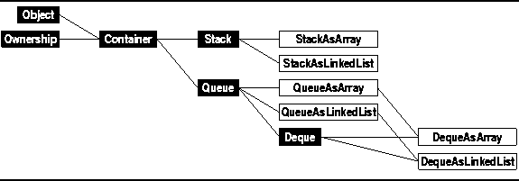
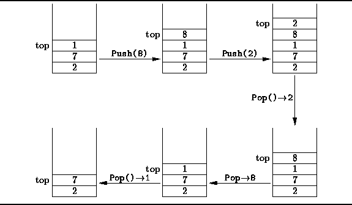
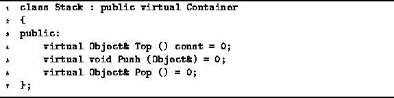

Data Structures and Algorithms
with Object-Oriented Design Patterns in C++
Data Structures and Algorithms
with Object-Oriented Design Patterns in C++

Figure: Object Class Hierarchy
The simplest of all the containers is a stack .
A stack is a container which provides exactly one function, Push,
for putting objects into the container;
and one function, Pop,
for taking objects out of the container.
Figure  illustrates the basic idea.
illustrates the basic idea.

Figure: Basic Stack Operations
Objects which are stored in stack are kept in a pile. The last item put into the stack is a the top. When an item is pushed into a stack, it is placed at the top of the pile. When an item popped, it is always the top item which is removed. Since it is always the last item to be put into the stack that is the first item to be removed, a stack is a last-in, first-out or LIFO data structure.
In addition to the Push and Pop operations, the typical stack implementation also provides an accessor called Top which returns the item at the top of the stack without removing it from the stack.
Program gives the Stack abstract class definition.
The Stack class is derived from the Container class.
Hence, its interface comprises all of the member functions
inherited from the base class plus the three member functions
Push, Pop, and Top.
Notice also that the Stack class is an abstract class.
The functions Push, Pop, and Top
are declared as pure virtual functions.

Program: Stack Class Definition
When implementing a data structure,
the first issue to be addressed
is to select the foundational data structure(s) to use.
Often, the choice is between an array-based implementation
and a pointer-based implementation.
The next two sections show an array-based implementation of stacks
which uses the Array<T> class introduced in Chapter
and a pointer-based implementation which uses the LinkedList<T> class.
 Copyright © 1997 by Bruno R. Preiss, P.Eng. All rights reserved.
Copyright © 1997 by Bruno R. Preiss, P.Eng. All rights reserved.